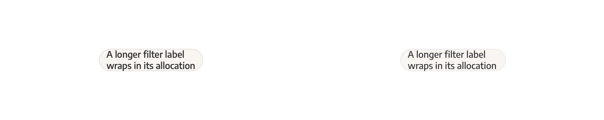
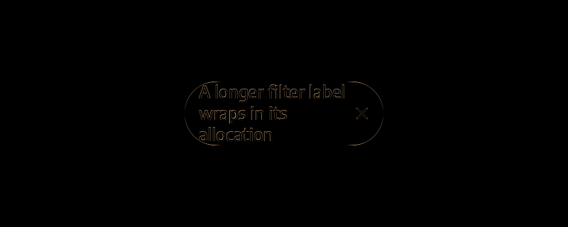
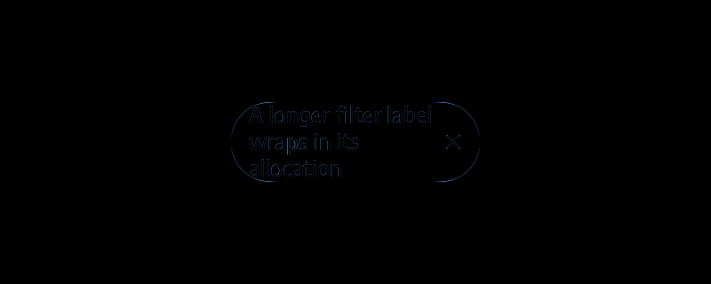

button-anchor-light-text1.0-offscreen-dpr1.0.png
failed: 389 changed pixels; maximum channel error 158


No resizing, ignored regions, or visual exceptions. Raw differences remain open.
failed: 389 changed pixels; maximum channel error 158
failed: 824 changed pixels; maximum channel error 168


failed: 596 changed pixels; maximum channel error 170


failed: 1288 changed pixels; maximum channel error 198

failed: 339 changed pixels; maximum channel error 125


failed: 755 changed pixels; maximum channel error 120


failed: 553 changed pixels; maximum channel error 133


failed: 1279 changed pixels; maximum channel error 191


failed: 469 changed pixels; maximum channel error 136
failed: 1346 changed pixels; maximum channel error 108
failed: 469 changed pixels; maximum channel error 136
failed: 1346 changed pixels; maximum channel error 108
failed: 490 changed pixels; maximum channel error 146


failed: 1436 changed pixels; maximum channel error 167


failed: 490 changed pixels; maximum channel error 146

failed: 1436 changed pixels; maximum channel error 167

failed: 543 changed pixels; maximum channel error 136


failed: 1582 changed pixels; maximum channel error 108


failed: 543 changed pixels; maximum channel error 136

failed: 1582 changed pixels; maximum channel error 108
failed: 564 changed pixels; maximum channel error 146


failed: 1672 changed pixels; maximum channel error 167


failed: 564 changed pixels; maximum channel error 146

failed: 1672 changed pixels; maximum channel error 167
failed: 478 changed pixels; maximum channel error 68


failed: 1599 changed pixels; maximum channel error 55


failed: 478 changed pixels; maximum channel error 68

failed: 1599 changed pixels; maximum channel error 55

failed: 509 changed pixels; maximum channel error 73
failed: 1685 changed pixels; maximum channel error 83
failed: 509 changed pixels; maximum channel error 73
failed: 1685 changed pixels; maximum channel error 83
failed: 552 changed pixels; maximum channel error 68

failed: 1863 changed pixels; maximum channel error 55


failed: 552 changed pixels; maximum channel error 68


failed: 1863 changed pixels; maximum channel error 55

failed: 583 changed pixels; maximum channel error 73

failed: 1949 changed pixels; maximum channel error 83

failed: 583 changed pixels; maximum channel error 73


failed: 1949 changed pixels; maximum channel error 83


failed: 136 changed pixels; maximum channel error 13


failed: 420 changed pixels; maximum channel error 15


failed: 136 changed pixels; maximum channel error 13

failed: 420 changed pixels; maximum channel error 15
failed: 134 changed pixels; maximum channel error 16


failed: 428 changed pixels; maximum channel error 18

failed: 134 changed pixels; maximum channel error 16

failed: 428 changed pixels; maximum channel error 18


failed: 222 changed pixels; maximum channel error 110


failed: 696 changed pixels; maximum channel error 93

failed: 222 changed pixels; maximum channel error 110

failed: 696 changed pixels; maximum channel error 93


failed: 220 changed pixels; maximum channel error 115


failed: 704 changed pixels; maximum channel error 98


failed: 220 changed pixels; maximum channel error 115

failed: 704 changed pixels; maximum channel error 98

failed: 1985 changed pixels; maximum channel error 204

failed: 6791 changed pixels; maximum channel error 204



failed: 1985 changed pixels; maximum channel error 204


failed: 6791 changed pixels; maximum channel error 204

failed: 2033 changed pixels; maximum channel error 214

failed: 6813 changed pixels; maximum channel error 214


failed: 2033 changed pixels; maximum channel error 214


failed: 6813 changed pixels; maximum channel error 214
failed: 1809 changed pixels; maximum channel error 136

failed: 4543 changed pixels; maximum channel error 141
failed: 1809 changed pixels; maximum channel error 136


failed: 4543 changed pixels; maximum channel error 141


failed: 1948 changed pixels; maximum channel error 147
failed: 4992 changed pixels; maximum channel error 194

failed: 1948 changed pixels; maximum channel error 147


failed: 4992 changed pixels; maximum channel error 194


failed: 378 changed pixels; maximum channel error 144

failed: 895 changed pixels; maximum channel error 207

failed: 378 changed pixels; maximum channel error 144


failed: 895 changed pixels; maximum channel error 207


failed: 352 changed pixels; maximum channel error 141

failed: 812 changed pixels; maximum channel error 208


failed: 352 changed pixels; maximum channel error 141


failed: 812 changed pixels; maximum channel error 208

failed: 420 changed pixels; maximum channel error 144


failed: 1004 changed pixels; maximum channel error 207


failed: 420 changed pixels; maximum channel error 144

failed: 1004 changed pixels; maximum channel error 207
failed: 394 changed pixels; maximum channel error 141


failed: 920 changed pixels; maximum channel error 208

failed: 394 changed pixels; maximum channel error 141
failed: 920 changed pixels; maximum channel error 208


failed: 396 changed pixels; maximum channel error 73


failed: 1157 changed pixels; maximum channel error 207

failed: 396 changed pixels; maximum channel error 73
failed: 1157 changed pixels; maximum channel error 207


failed: 365 changed pixels; maximum channel error 71

failed: 1063 changed pixels; maximum channel error 208


failed: 365 changed pixels; maximum channel error 71


failed: 1063 changed pixels; maximum channel error 208
failed: 438 changed pixels; maximum channel error 73


failed: 1294 changed pixels; maximum channel error 207

failed: 438 changed pixels; maximum channel error 73

failed: 1294 changed pixels; maximum channel error 207


failed: 407 changed pixels; maximum channel error 71
failed: 1199 changed pixels; maximum channel error 208

failed: 407 changed pixels; maximum channel error 71


failed: 1199 changed pixels; maximum channel error 208


failed: 76 changed pixels; maximum channel error 18

failed: 155 changed pixels; maximum channel error 37


failed: 76 changed pixels; maximum channel error 18


failed: 155 changed pixels; maximum channel error 37

failed: 76 changed pixels; maximum channel error 19


failed: 160 changed pixels; maximum channel error 37


failed: 76 changed pixels; maximum channel error 19

failed: 160 changed pixels; maximum channel error 37
failed: 158 changed pixels; maximum channel error 113


failed: 348 changed pixels; maximum channel error 97

failed: 158 changed pixels; maximum channel error 113

failed: 348 changed pixels; maximum channel error 97


failed: 156 changed pixels; maximum channel error 114
failed: 345 changed pixels; maximum channel error 97

failed: 156 changed pixels; maximum channel error 114


failed: 345 changed pixels; maximum channel error 97


failed: 1768 changed pixels; maximum channel error 211


failed: 5603 changed pixels; maximum channel error 211
failed: 1768 changed pixels; maximum channel error 211

failed: 5603 changed pixels; maximum channel error 211


failed: 1720 changed pixels; maximum channel error 212
failed: 5596 changed pixels; maximum channel error 212
failed: 1720 changed pixels; maximum channel error 212


failed: 5596 changed pixels; maximum channel error 212


failed: 1678 changed pixels; maximum channel error 146


failed: 3783 changed pixels; maximum channel error 192

failed: 1678 changed pixels; maximum channel error 146

failed: 3783 changed pixels; maximum channel error 192


failed: 1545 changed pixels; maximum channel error 141

failed: 3365 changed pixels; maximum channel error 153


failed: 1545 changed pixels; maximum channel error 141


failed: 3365 changed pixels; maximum channel error 153


failed: 15121 changed pixels; maximum channel error 166


failed: 16088 changed pixels; maximum channel error 191

failed: 97572 changed pixels; maximum channel error 163

failed: 147012 changed pixels; maximum channel error 185

failed: 20789 changed pixels; maximum channel error 166
failed: 21756 changed pixels; maximum channel error 191

failed: 91770 changed pixels; maximum channel error 166


failed: 134450 changed pixels; maximum channel error 185

failed: 14282 changed pixels; maximum channel error 211

failed: 15249 changed pixels; maximum channel error 211

failed: 85175 changed pixels; maximum channel error 212

failed: 127855 changed pixels; maximum channel error 212


failed: 23333 changed pixels; maximum channel error 203
failed: 25526 changed pixels; maximum channel error 249
failed: 91748 changed pixels; maximum channel error 205
failed: 134428 changed pixels; maximum channel error 226
failed: 104135 changed pixels; maximum channel error 95
failed: 147095 changed pixels; maximum channel error 111
failed: 94356 changed pixels; maximum channel error 106
failed: 137156 changed pixels; maximum channel error 109
failed: 14189 changed pixels; maximum channel error 166
failed: 15156 changed pixels; maximum channel error 191
failed: 44428 changed pixels; maximum channel error 166
failed: 63148 changed pixels; maximum channel error 185
failed: 27769 changed pixels; maximum channel error 247
failed: 37809 changed pixels; maximum channel error 249
failed: 91748 changed pixels; maximum channel error 226
failed: 134428 changed pixels; maximum channel error 226
failed: 20789 changed pixels; maximum channel error 166


failed: 21756 changed pixels; maximum channel error 191


failed: 91770 changed pixels; maximum channel error 166

failed: 134450 changed pixels; maximum channel error 185


failed: 15121 changed pixels; maximum channel error 166

failed: 16088 changed pixels; maximum channel error 191


failed: 97572 changed pixels; maximum channel error 163


failed: 147012 changed pixels; maximum channel error 185


failed: 14282 changed pixels; maximum channel error 211


failed: 15249 changed pixels; maximum channel error 211


failed: 85175 changed pixels; maximum channel error 212


failed: 127855 changed pixels; maximum channel error 212

failed: 12701 changed pixels; maximum channel error 166
failed: 13668 changed pixels; maximum channel error 191
failed: 80192 changed pixels; maximum channel error 163
failed: 120832 changed pixels; maximum channel error 185